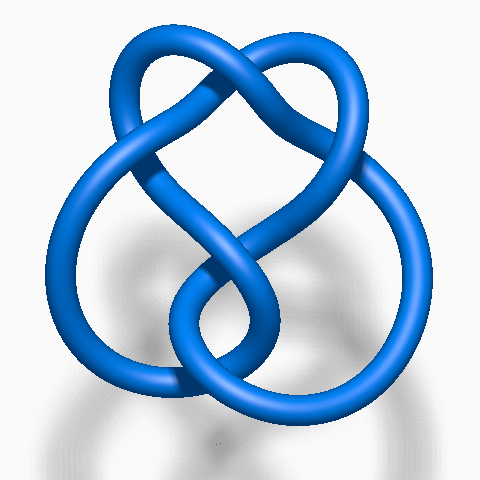

Adapt UA tests
remove sensory distractions
medium level
critical level
The page also reacts to
prefers-reduced-motion
.
Low, medium, and critical
simplification
levels are shown by default.

Distracting sign‑up form
Time left:
Name
Email address
Areas of interest
Blueberry marketing
Portfolio management
Fractals
Doctor Who